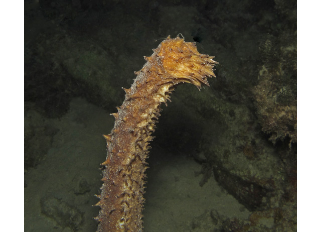
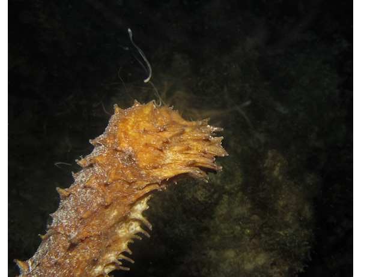
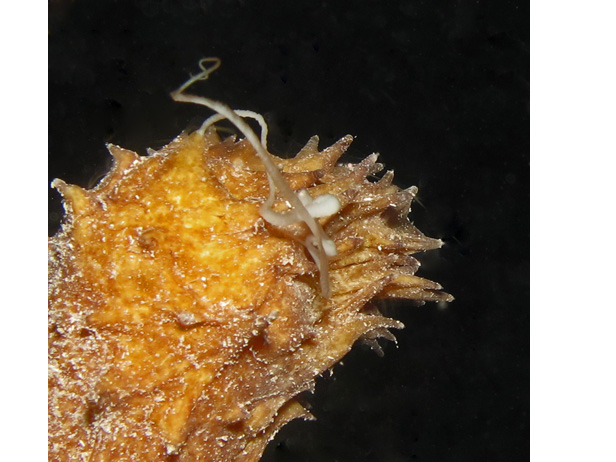

|
The Coral Spawn: A Personal Chronicle - August 2010 The full moon of August had arrived, and the Honduras Bay Island of Roatan began its coral spawn watch. Tides, temperatures and ocean activity were monitored and shared via emails. Coincidence or not, during the week prior to the spawn, the ocean was alight with beautiful Moon Jellyfish - perhaps foreshadowing the spawn which is timed by the phase of the moon. In my 1,000-plus hours of diving these Roatan walls, I had never seen such an abundance of Moon Jellies.
Night dives became the order of the day for divers aroused by the possibility of viewing this event seen by most only in documentary films. My dive buddy, Carolyn, and I did night dives much of the week in an attempt to observe the spawn. We would nap after dinner; then get up to dive from 11:30 PM -1:30 AM or from 10:00 to midnight. We talked about the exhaustion that was building, but we kept the vigil. And it paid off!
Others held onto their spherical eggs, releasing them with the effort of birthing. Some coral rods were wrapped in a winter overcoat of film that methodically peeled off the rods and floated into the water column as a clear sheet of eggs.
There, all done. The coral had completed its annual spawn. Ah, but how naive we were. The spawn is not just a coral event; it is an orchestrated ocean happening. The ocean was electric with energy. Creatures moved about with atypical boldness, sometimes mania, engaging in strange behavior and activity. Everything seemed to be either eating or reproducing. We were mesmerized by the show for two hours. Creatures that normally hide from our flashlights, remained unaffected by the lights and wandered the coral in a type of frenzy. Octopi, lobsters, crabs, Green-, Spotted-, Chain-, and Sharptail eels. One huge Channel Clinging Crab, either trying to escape the octopus stalking him or intoxicated by the spawn, actually got too close to the reef's edge, dangled precariously on the precipice for a minute,
and then fell off. He drifted to the ocean bottom doing a classic, full-body flare to slow his descent. (Did he attend the Open Water Dive Course to learn that?)
Sea cucumbers, typically lumbering their way across the ocean floor, were crawling the walls - literally and figuratively. These great globs seemed ready to take on Mt. Everest. Clusters of Brittle Stars held orgies, not in the privacy of their coral hideouts, but entwined like a toupee atop coral heads. Typically scurrying to shelter with a strong aversion to our dive lights, tonight they were oblivious to even sustained light, much too engrossed in their primal activities.
And the Brittle Stars that were not in convention clusters, behaved indecently, perhaps to gain the attention of others or to prepare for their private contribution to the evening's reproductive stew. Some produced a cloud of what we presume was sperm. They stood up on their long, spindly legs, lifting their bodies to the moon, then undulated to music we did not hear.
The small Reef Urchins also abandoned their sheltered homes and moved to communes on coral heads to give homage to the moon. An occasional Brittle Star lay tangled in the urchins' spines - eating, being eaten - hard to tell.
A 3-inch Tasseled Nudibranch, only seen occasionally in the Caribbean, survived its fall after a rowdy octopus knocked it from the coral wall. Then it delighted us with its red and orange net pattern and branched cerata.
And the worms - absolutely thousands of them in every color and size - were far more persistent than the No-See-Ums.
Above them were schools of small, silver-gleaming fish dining on a gourmet meal of Coral Eggs Con Worms. At times it was difficult to see the coral through the veil of worms. And they were not forestalled by neoprene hoods, wetsuits, or vests. Only one's masked eyes and nose were free of their insistence. They wiggled in and around ears and in cleavage and were found in our hair when we showered after the dive. It was enough to pull the faint of heart from the ocean, but we were too hooked to leave.
Post Script: In 2011, my Roatan trip was not scheduled during the projected spawn week. But, as fate would have it, during one night dive, I happened upon 'late-bloomers", so to speak. The Tigertail Sea Cucumbers decided to share their secrets with me. These creatures, generally horizontal and extended out from under the coral, stood proud and purposeful, and joined the ocean renewal project.   
Trip Report Quick Links |
|||||||||||||||||||||||||||||||||